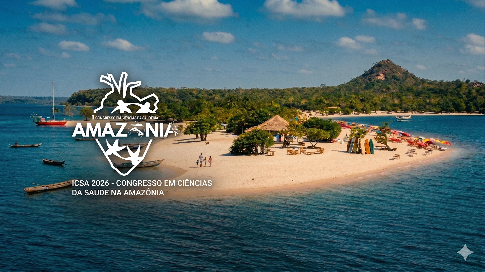
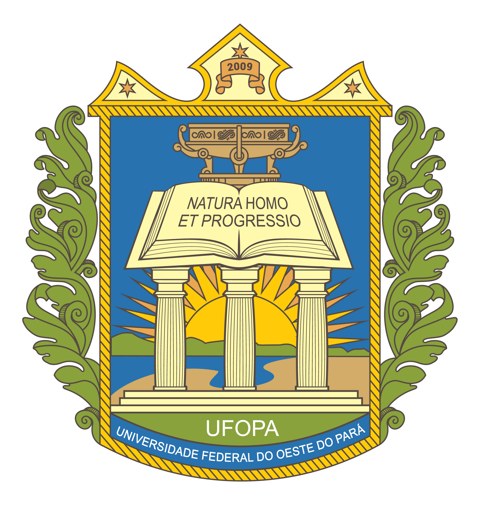
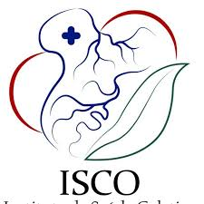
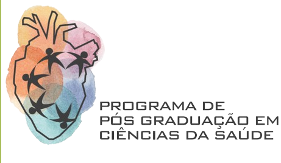
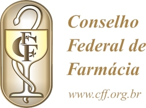
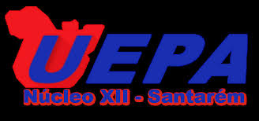

É com grande entusiasmo que anunciamos o I Congresso em Ciências da Saúde na Amazônia, que ocorrerá na cidade de Santarém, PA, entre os dias 26 e 28 de agosto de 2026. Com o tema central "Interfaces entre Saúde Coletiva, Inovação Terapêutica e Saberes Tradicionais", esta edição será uma oportunidade ímpar para promover debates e reflexões sobre as responsabilidades e potencialidades da saúde em nossa região.
A Amazônia apresenta desafios singulares no campo da saúde, marcados por desigualdades sociais, diversidade cultural, dificuldades de acesso aos serviços e especificidades epidemiológicas.
O ICSA 2026 reunirá renomados especialistas, estudantes e profissionais da saúde para um diálogo interdisciplinar. O programa científico abordará avanços divididos em duas grandes áreas: Saúde Coletiva e Inovação Terapêutica.
Acreditamos que o Congresso fortalecerá a produção científica regional. A cidade de Santarém, através da Universidade Federal do Oeste do Pará (UFOPA), será o cenário profícuo para fomentar parcerias estratégicas.
📝 Credenciamento (17:00 - 20:00) | Auditório Tapajós
🎤 Prof. Dr. Madson Gomes
📍 Núcleo Tecnológico🎤 Dra. Adriele Miranda
📍 Farmácia Universitária🎤 Prof. Dr. Hernane Guimarães
📍 Lab. Informática🎤 Profª. Dra. Kariane Nunes
📍 Lab. Farmacotécnica🎤 Enfermeiro Antenor Matos
📍 Miniauditório🎤 SMS Santarém
📍 Sala de Aula🎤 Me. Douglas Avelar
📍 Núcleo Tecnológico🎤 Me. Adenilson Barroso
📍 Farmácia Universitária🎤 Msc. Amanda Esquerdo
📍 Lab. Informática🎤 Perito Alexandre Azevedo
📍 Miniauditório🎤 Prof. Dr. Lincoln Correa
📍 Sala de Aula🎤 Grupo de Carimbó Raízes Amazônicas
🎤 Profa. Dra. Aldenize Xavier, Profa. Dra. Kelly Castro e convidados
🎤 Convidado FAPESPA
*Todas as atividades deste dia ocorrerão no Auditório Tapajós.
🎤 Profa. Kariane Nunes e Prof. Dr. Vitor Moutinho
🎤 Profª. Dra. Luana Rodrigues, Juliana Gagno e Marina Meschede
🎤 Prof. Dr. Emerson Silva Lima (UFAM)
🎤 Convidados especiais
🎤 Prof. Dr. Madson Ralide Fonseca (UNIFAP)
*Todas as atividades deste dia ocorrerão no Auditório Tapajós.
🎤 Profª. Dra. Rosa Mourão, Cleydson Breno e Patrícia Danielle
🎤 Prof. Dr. Emerson Silva Lima
🎤 Prof. Dr. Thalis Ferreira dos Santos
🎤 Prof. Dr. Hernane Guimarães
🎤 Prof. Dr. Luis Reginaldo e Profª. Dra. Heloisa Meneses
🎤 Discentes do PPGCSA
🎤 Profª. Dra. Gabriela Bianchi
Auditório da Unidade Tapajós (Laranjão)
R. Vera Paz, s/n - Salé, Santarém - PA

Capacidade para 400 pessoas. O local conta com acessibilidade total, elevadores, tradução simultânea em LIBRAS e um espaço dedicado de recreação e bem-estar.
✈️ Aeroporto Internacional de Santarém
Aprox. 20min de carro (13 km) do Campus.
Idealizadora do Evento e Coordenadora do PPGCSA / UFOPA
Deliane dos Santos Soares
Ananda Emilly de Oliveira Brito
Brenda Campos Uchoa
Antenor Matos de Carvalho Junior
Sabrina Braga Castro da Silva
Pamela Pires
Vanessa Kemilly Gomes Lima
Érica da Silva Nascimento Feitosa
Natália Lima Aguiar
Nilcilene Sampaio Lima
Felipe Jordir dos Santos Gomes
Maíra Sophia Ribeiro de Araújo
Moniky Rayanne Silva dos Santos
Luiz Otávio da Silva Cardoso
Jefferson Adan Cavalcante Lopes
Valter Junio Lima de Sousa
Vitor Nascimento Liberal Teixeira
Yone de Jesus Pampolha Araújo
Teresa Victória Costa da Silva
Willian Carlos Sousa Pinto
Flávia Silva de Aquino
Erivelton Gama Rego
Joaquim Costa Rosa
Sabrina do Carmo Vieira Pereira
Ana Shizue Odane Rodrigues Campos
Kianna Vitória dos Santos Ferreira
Alessandro Benevides da Fonseca




